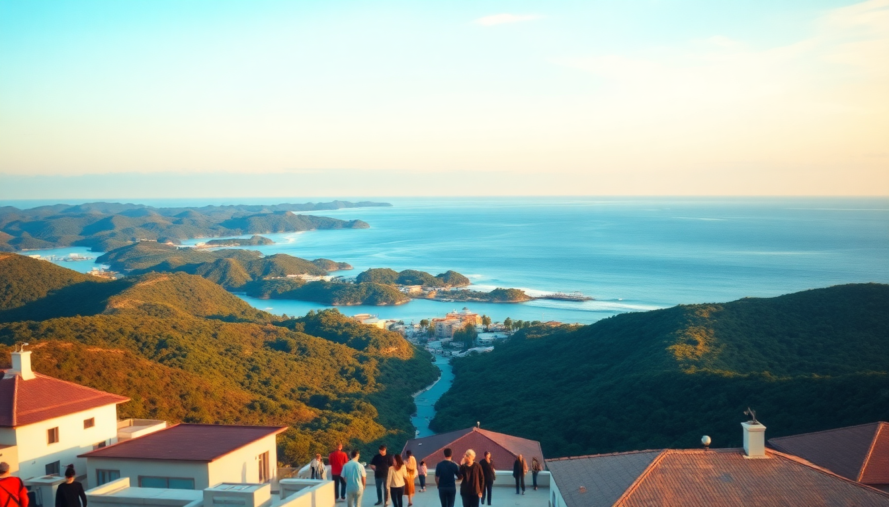

7-Day Maldives Itinerary: Malé, Baa Atoll & Ari Atoll

We landed in Malé with a backpack, a snorkel mask, and zero resort booking—just a plan to island-hop across three atolls in seven days. If you think the Maldives is only for honeymooners on water villas, this itinerary will change your mind. We hit the capital’s fish market, slept on a local island in Baa Atoll, swam with mantas in Ari Atoll, and finished with a budget guesthouse in North Malé Atoll. Here’s exactly how we did it, what we’d skip, and where you should spend your money.
Why start in Malé and not fly straight to a resort?
Malé gets a bad rap as a transit hub, but we found it worth a full day. It’s chaotic, hot, and smells like diesel and fried fish—but that’s the real Maldives. We dropped our bags at The Beehive (a clean, no-frills guesthouse near the jetty) and spent the afternoon at Malé Local Market and Fish Market. The tuna auction at 4 PM is a spectacle: whole yellowfin tossed onto concrete slabs, haggling in Dhivehi, blood washing into drains. Dinner at Seagull Café gave us mas huni (shredded smoked fish with coconut) and roshi for under $5.
- Malé Local Market – produce and souvenirs, but skip the overpriced t-shirts.
- Fish Market – go at 4 PM for the auction; wear shoes with grip (slippery floor).
- Seagull Café – cheap local breakfast; order short eats (samosa-style pastries).
- The Beehive – basic but central; book direct for better rates.
- Hulhumalé Ferry – 10 minutes, MVR 10 (about $0.65); runs every 15 minutes.
Honest take: Malé is not pretty. It’s crowded and the beach is non-existent. But skipping it means missing the only place in the Maldives where locals outnumber tourists. One night is enough.
How do you get from Malé to Baa Atoll without a seaplane?
We took the public ferry from Malé to Baa Atoll—specifically to Dharavandhoo Island. The ferry runs twice a week (Monday and Thursday) and takes 7 hours. It’s not comfortable: plastic seats, no AC, and the Indian Ocean swell hits hard. But it costs $15 instead of $400 for a seaplane. We stayed at Sunrise Beach Guesthouse, a family-run place where the owner, Ahmed, met us at the jetty with fresh coconuts.
- Dharavandhoo – small island, walkable in 30 minutes; has a bikini beach (locals-only rule means you swim in a t-shirt elsewhere).
- Hanifaru Bay – a UNESCO biosphere reserve; manta ray feeding season is June–November. We saw 12 mantas in one snorkel session.
- Sunrise Beach Guesthouse – $60/night including breakfast; book the full-board option (lunch/dinner are extra but worth it).
- Baa Atoll Public Ferry – check the MTCC website for schedules; bring seasickness pills.
The guesthouse arranged a Hanifaru Bay snorkeling trip for $40 per person. That included a guide, fins, and mask. We swam within arm’s length of mantas—no resort required. The downside? The island shuts down by 10 PM, and the only restaurant besides the guesthouse is Ala’s Kitchen, which serves decent curry but runs out of fish by 8 PM.
Is Ari Atoll better for diving or relaxing?
After three days in Baa, we took a speedboat transfer to Ari Atoll (2 hours, $80 per person). Ari is bigger, more developed, and split between resort islands and local islands. We stayed on Maafushi in South Ari, at Kaani Village & Spa—a mid-range hotel with a pool and a surprisingly good buffet. Maafushi is touristy, but that means more dining options and easier dive bookings.
- Maafushi – the main local island in Ari; has a bikini beach, souvenir shops, and a hospital.
- Whale Submarine – skip it. Overpriced ($120) and the visibility was murky. Instead, do a manta snorkel with I-Com Tours ($50).
- Manta Point – a cleaning station near the south tip of Ari; we saw mantas in March (off-season for Hanifaru).
- Kaani Village & Spa – comfortable but not luxury; book a sea-view room, not the garden side.
We also did a half-day sandbank trip—a boat drops you on a sliver of white sand in the middle of the ocean for two hours. It’s as surreal as it sounds, but bring reef-safe sunscreen (the only kind allowed) and a hat. No shade exists.
Can you do North Malé Atoll on a budget?
Yes, and we think it’s the best value in the Maldives. North Malé Atoll has the clearest water we saw, plus easy access to Malé for your flight out. We ferried from Maafushi to Hulhumalé (1 hour, $3), then took a local bus to Himmafushi Island. We booked Himmafushi Inn, a guesthouse with a rooftop terrace overlooking the lagoon.
- Himmafushi – a surfing island; the reef break here is beginner-friendly.
- Cocoa Island – a resort you can visit for lunch (call ahead); the sandbank here is pristine.
- Himmafushi Inn – $50/night; owner runs a snorkeling trip to Turtle Reef for $30.
- North Malé Atoll Ferry – runs hourly from Malé; buy tokens at the terminal.
The highlight was Turtle Reef, 15 minutes by boat from Himmafushi. We saw green sea turtles feeding on seagrass, plus reef sharks and a moray eel. The guesthouse lent us gear for free. Downside: Himmafushi has one restaurant, The Jetty, which serves decent pizza but closes at 9 PM sharp.
What’s the best way to get between atolls?
We used three methods: public ferry (Malé to Baa), speedboat (Baa to Ari), and public ferry again (Ari to North Malé). Public ferries are cheap but slow—plan your itinerary around the MTCC schedule. Speedboats are faster but pricey; book through your guesthouse for better rates. Seaplanes are for resort guests only; we didn’t use one.
- MTCC Public Ferry – routes between Malé, Baa, and Lhaviyani atolls; book 2 days ahead.
- Speedboat Transfers – ask your guesthouse; we paid $80 Baa-to-Ari, $50 Ari-to-North Malé.
- Malé-Hulhumalé Bus – free; runs every 20 minutes from the airport terminal.
Our advice: don’t try to do all three atolls in a week if you’re prone to seasickness. The public ferry from Baa to Malé was rough—we saw people vomiting. Stick to two atolls if you value comfort.
When is the best time to visit for this itinerary?
We went in March, which is the dry season (northeast monsoon). The water was calm, visibility was 20+ meters, and we didn’t see rain. The trade-off: it’s peak season, so guesthouses were 80% full and prices 20% higher. For budget travelers, consider May–June (shoulder season) or September–October (southwest monsoon, but fewer crowds).
- December–April – dry, sunny, calm seas; best for snorkeling and diving.
- May–November – wet season; cheaper rooms, but rougher seas and more rain.
- June–November – manta season in Hanifaru Bay; worth the rain risk.
We’d go again in April if we wanted guaranteed sun, or in September for the mantas. Just avoid August—that’s when the resorts jack up prices for European holidays.
FAQ
Is it safe to travel the Maldives on a budget? Yes. We felt safe on every island. Crime against tourists is rare. The biggest risk is the sun—bring high-SPF reef-safe sunscreen and a rash guard. The tap water isn’t drinkable; buy bottled water at local shops (MVR 5 per 1.5L). Avoid walking alone on beaches after dark on local islands; it’s not dangerous, but locals may consider it culturally insensitive.
Do I need a visa for the Maldives? No. Most nationalities get a free 30-day visa on arrival. You just need a passport valid for at least 6 months and a return ticket. The immigration officer asked us for a hotel booking; we showed a printed confirmation from Sunrise Beach Guesthouse. No questions asked.
What should I pack for a 7-day atoll-hopping trip? Pack light. You’ll carry your bag on ferries and speedboats. Essentials: reef-safe sunscreen, a rash guard, a dry bag, a reusable water bottle, and a sarong (for local island dress codes). Leave the heels and formal wear at home—you’ll live in flip-flops and swim trunks. Bring cash for local islands; ATMs exist in Malé and Maafushi but not on Dharavandhoo.
Conclusion
- Start in Malé for a day to see the real capital, then move on—don’t linger.
- Use public ferries to save money; book speedboats only for time-critical transfers.
- Stay on local islands (Dharavandhoo, Maafushi, Himmafushi) for $50–80/night guesthouses.
- Book snorkeling trips through your guesthouse; they’re cheaper and more reliable than online aggregators.
- Skip the resorts unless you want a private pool and room service—you don’t need them to see mantas, turtles, or sandbanks.